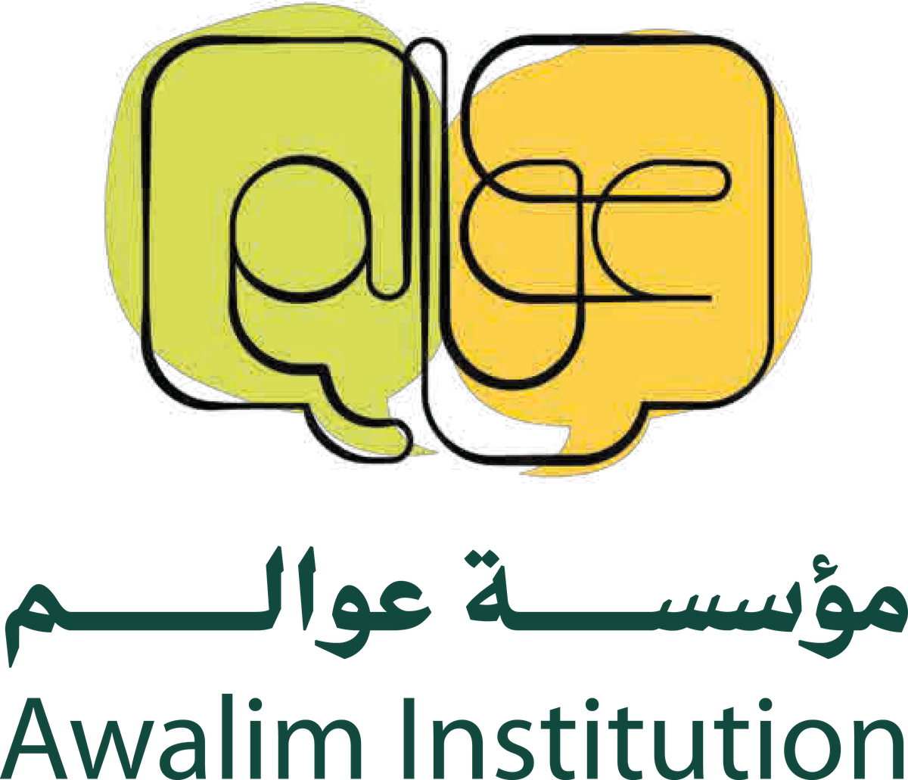

مؤسسة متخصصة في تعزيز الوعي المعرفيّ عند الشباب بوسائل متنوعة متجددة. A specialized institution advancing intellectual awareness among youth through diverse, ever-renewing methods.
وجهة الشباب الأولى في تنمية معارفهم وتعزيز إيمانهم. The youth's first destination for developing their knowledge and strengthening their faith.
صناعةُ مسارات متنوعة متكاملة؛ تُكسب الشباب شغف العلم وحب الدين. Crafting diverse, integrated pathways that instill in youth a passion for knowledge and love of faith.
17 جمادى الأولى 1442هـ الموافق 1 يناير 2021م. 17 Jumada al-Awwal 1442 AH — 1 January 2021.
هنا بعض الأرقام والإحصائيات عمّا أنجز في مؤسسة عوالم خلال السنوات السابقة.Some numbers and statistics on what Awalim Institution has accomplished over the past years.